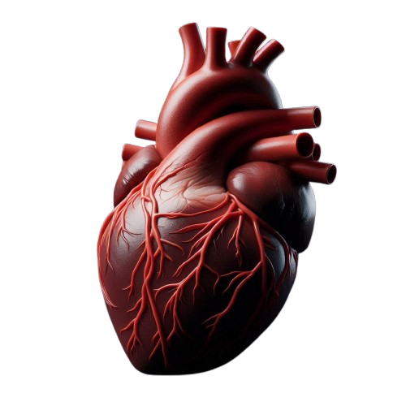

Benvenuto nel nostro sito dedicato all'apparato cardiocircolatorio, il motore instancabile del nostro corpo. Ogni battito del cuore è un segno di vita, un simbolo di energia e vitalità. Attraverso queste pagine, esploreremo insieme il cuore, i vasi sanguigni e il sangue, scoprendo come lavorano in armonia per mantenerci attivi e in salute. Ti invitiamo a navigare tra le sezioni per approfondire le strutture, comprendere il funzionamento della circolazione, conoscere le principali patologie e scoprire come lo sport può essere un alleato prezioso per il tuo benessere. Prendersi cura del cuore è il primo passo verso una vita lunga e sana.
L'APPARATO
CARDIO CIRCOLATORIO
